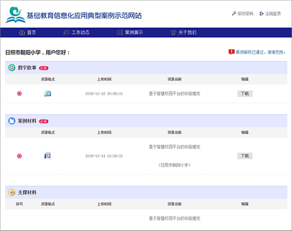
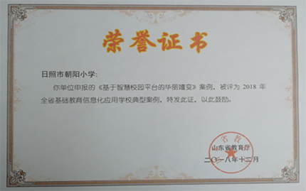
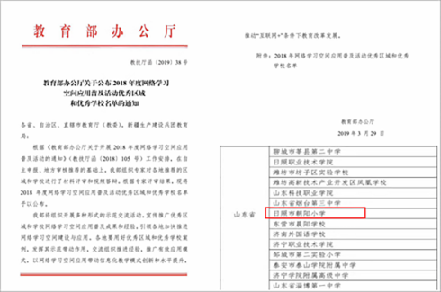
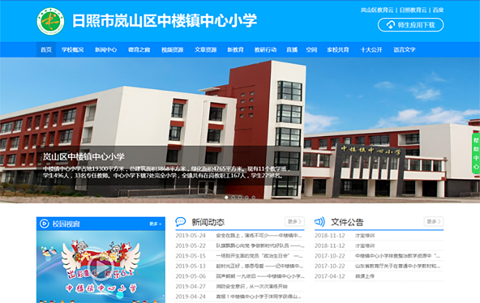
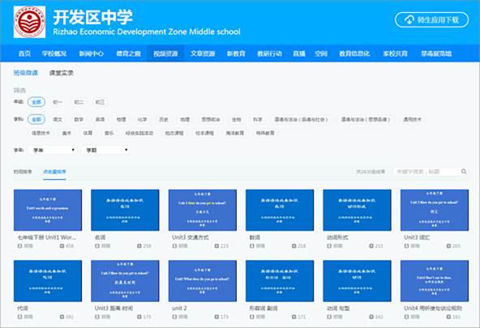
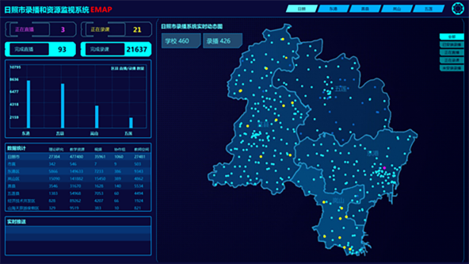
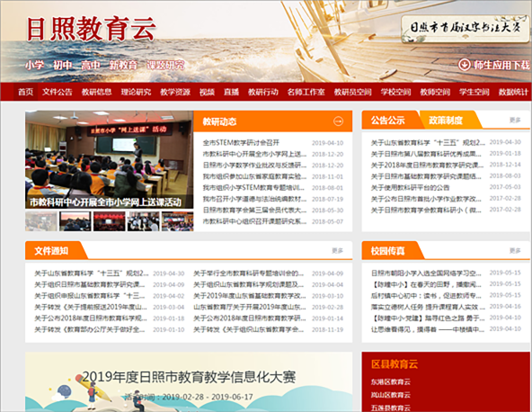
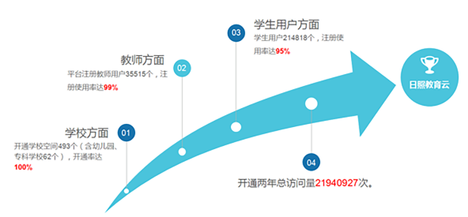

-
朝阳小学应用普及教育信息化模式
“朝阳小学教育信息化模式”是在典型的为进城务工子女而新建的学校，师资薄弱、匮乏，学生基础差，家长普遍文化水平低的情况下，全方位采用“硬件+教育云平台+智能终端”的一整套日照才宝教育服务系统，进行深度融合使用，并且配套了相关培训、引导、评比、考核等机制，做到班班通，天天用，最后形成了一套独具特色的教学、教研、管理的系统方法。
学校从2016上半年开始学校全面应用日照智慧校园平台，配套安装26套普及型录播系统，成为首个实现录播系统“班班通”的学校，在此基础上充分利用才宝“校园云平台+录播教室+应用终端”的模式，使学校教育教学各方面发生深刻改变。促进了教师队伍的专业成长，提高了教学质量，增进了家校沟通，提升了学校的社会满意度。
在2年的使用过程中，2018年日照市朝阳小学被教育部表彰为
“全国网络学校空间普及用优秀学校”，
同时被教育部评选为
“全国基础教育信息化应用典型学校”。



朝阳小学模式的意义
（1）通过教学模式，一定程度上弥补了小学阶段学生对基础学习的差异，同时可以进行个性化教育，很好地落实了以人为本的理念。
（2）通过学习模式，开展丰富多彩的内容，从小培养孩子探究性思维，对于创新型人才培养具有重要意义。
（3）通过家校共育模式，很好化解了长期以来普遍存在的家校矛盾，赢得较好的口碑，同时引领社区发展，提高公民素质。
（4）我国目前依然面临因大量务工子女进城而新建小学的情况，朝阳小学模式为这样的小学在教育信息化方面提供了很好的借鉴。
（5）朝阳小学的教育信息化模式为小学阶段素质教育的全面落地提供了范例。
-
中楼镇中心小学带村小“1+N”模式
“中楼镇中心小学教育信息化模式”是在典型的偏远乡镇以中心小学为法人代表来统一管理周边7个完全小学，面临相距遥远，管理不便，老师和教学资源匮乏，老师水平差，教育设施落后等问题时，采取了中心小学和每个完全小学安装一套录播设备；所有小学都统一使用才宝教育云平台，开通班级、教师、学生空间；鼓励所有学生开通智能终端，随时进行互动等，并结合日照才宝教育服务系统，配套了《中心小学教育信息化发展三年规划》、《中心小学教育信息化应用考评办法》等，形成了一套与教育信息化深度结合，高质量的，能切实落地偏远乡镇以中心小学为法人代表“1+N”的教学管理模式的系统方法。
中楼镇小学模式的意义
（1）打破时间和空间的障碍，将中心小学与完全小学紧密联系起来，实现管理、教研、教学的互通有无，能真正切实地落地我国广大偏远乡镇普遍实行的“1+N”中心小学法人制的教学管理模式，提高落后乡镇的管理效率、节约管理成本，提高教学水平。
（2）有利于缓解乡村普遍存在的家长素质不高、留守儿童家庭教育缺乏的问题，补充家庭家庭教育的不足，家校共育促进孩子健康成长。
（3）有利于缓解乡村师资匮乏、教师水平不高、教学资源匮乏带来的教育均衡及以此引发的相关社会问题，有利地促进了乡村教育的进步和发展。

-
开发区中学教育信息化模式
“开发区中学教育信息化模式”是在典型的中国三、四线城市初级中学，一方面面临教育信息化趋势，需要主动融合，一方面面临普遍的升学压力，同时学生青春萌动、叛逆等，身心健康和安全要高度关注等情况下，通过采取统一使用才宝教育云平台，开通班级、教师、学生空间等；通过才宝系统培训家长使用信息化工具，引导家长，深化家校共育；问题导学，微课助力，号召广大教师使用微课功能进行磨课，录制优质微课资源，形成优质教育资源，丰富了教学资源等信息化教学手段；出台相关保障机制等，形成了一套与教育信息化有机结合，符合中学阶段实际的系统教学管理方法。
开发区中学教育信息化模式的意义
（1）让教育信息化切实地服务于中学教育，同时满足国家和教育部门对于教育信息化的要求，走出一条符合中学教育的新路子，可以供其他相同阶段中学参考和借鉴。
（2）走出了一条用教育信息化来有力缓解初中学生青春期难以管理和学习习惯难养成的问题的路子，探索出了中学家校共育切实落地的方法，值得借鉴。

-
日照市区域整体教育信息化模式
“日照区域教育信息化模式”是在国家和地方关于推动教育信息化的相关政策的指引下，为了进行区域教育信息化的统筹管理，提高区域教育质量，促进区域教育均衡等，通过与日照才宝教育服务系统充分结合，认可“以区域为中心，以学校为基本单位”开展教育信息化的理念。
日照教育信息化由全市进行统筹安排，安装录播系统，搭建三级云平台，普及视频应用，实现研管一体，建设三层空间，平台空间互联互通，深化教学六项应用，全面提升教学水平。
安装录播系统：全市统一实施录播系统覆盖工程，一期工程完成安装才宝录播系统426套，覆盖全市每所中小学校，实现校校录课。录播全覆盖后，在日照市建成国内首个集视频生产、层级管理、互联互通、共建共享于一体的教育云。所有资源经过教育云学校、区县、市三级审核筛选，提高资源质量，持续建设优质教育资源库，全市共建共享，促进教育均衡发展。

搭建三层平台：全市统筹，搭建“市教育云平台——区县教育云平台——学校数字校园平台”三级管理审核；
普及视频应用：以视频评选和直播的形式，开展在线教研、在线评课等教学科研活动，培养教师队伍，提升整体教学质量和教育管理水平。以互动直播的形式，开展同步课堂教育帮扶，使优秀教师资源向薄弱学校倾斜，实现一校带多校，同上一堂课，促进教育公平。
建设三层空间：开通“学校空间——班级空间——师生空间”三级空间；功能模块涵盖展示、教学、教研、管理等；
家长可以通过学生账户登陆；每一层平台功能模式相同；每一层平台主体拥有其对应的自主权、管理权、审核权等；教育主体基本全覆盖，每个主体可以在整个区域系统浏览、学习；与外地市教育云等进行跨区域资源共享；资源随时随地上传、审核、优化等系列举措，并且鼓励各地学校依托日照才宝教育信息化模式进行自我特色化的信息化办学，最后形成了一整套与教育信息化创造性结合，关于区域教学、教研、管理，构建区域良好教育生态，促进区域教育繁荣的系统方法。

日照教育信息化成果（2017-2018年）
日照教育云注册用户27万余人，各类教育教学资源170万件，每日持续增量近万件。教育局开展直播活动238次，开展网络评课300余次，形成协作组1700余个。开通两件总访问量近2200万次。

模式的意义
（1）教育的特殊性要求进行区域的教育活动，要在有规划的组织管理下开展。日照市的区域教育信息化模式，有效解决了长期困扰中国教育的“放管服”难题，为其他区域进行的教育信息化改革提供了有借鉴意义的落地方案
（2）日照区域教育信息化模式因为自身结构的优良、技术的精湛、使用方便快捷等，在很好地服务日照区域的教育业务的同时，还非常有利于进行高质量的教育援疆等教育扶贫，响应国家号召。
（3）这一套深入打磨，技术与教学业务过程、教育体系结构、教学规律紧密结合的区域教育信息化模式，能够使教育信息化真正帮助教育相关方的教育实践，真正被一线教育工作者接受和喜欢，不再因为教学、技术“两张皮”而增加负担，真正实现教育的革命。
（4）打造区域教育信息化系统平台，对老师进行客观、科学地评课。让老师的授课可以受到公开、公平、公正的评价，并接受区域内相关各方的广泛监督，有利于促进教师队伍的健康成长。
（5）通过区域教育信息化模式实现了区域教育资源的汇聚，一方面，共享的区域资源库有利于促进区域的教育均衡，缓解社会矛盾，解决部分地区教育资源匮乏的问题。另一方面，庞大、成体系的高质量教育资源为多种办学模式提供了可能，有利于教育生态的繁荣。
-
牡丹区教研体系应用模式
牡丹区教育局在全区中小学校普及安装使用才宝教育录播教研系统，半年时间开展教研直播活动86次，不到一年时间教研平台总访问量达400多万人次。借助新教育和信息化两个动力，启动新教育十大行动，积极开展网络教研活动，构建学校发展共同体，推行“五研一体”教研机制，开展“五课型”系统活动，利用信息技术与教育教学活动深度融合，在牡丹区教学教研平台上，建立起独具特色的教学教研体系，进行教学创新，打造出“新教育+互联网+教学教研”的牡丹区教研特色。